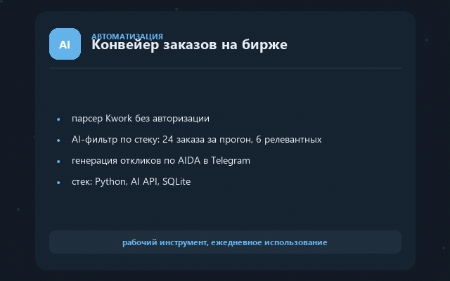

Java-разработчик — интеграции API, боты, автоматизация процессов под ключ.
Написать в Telegram: @iconzrusЗадача. Разбирать состав продукта по фото, штрихкоду или тексту и получать честный вердикт без ручного анализа.
Решение. Telegram-бот с AI-вердиктами «Можно / Осторожно / Не брать»: Yandex Vision OCR + rule engine, метрики качества (/stats), 6 команд — /start, /profile, /history и другие.
41 автотест — сборка BUILD SUCCESS; regression-тесты на реальных составах (CompositionSamplesTest).
Смотреть код
Задача. Ручной поиск заказов на бирже и написание каждого отклика съедают часы.
Решение. Конвейер: парсер Kwork → AI-оценка заказа 0–10 по стеку и бюджету → готовый AIDA-отклик → Telegram. SQLite-дедуп заявок (orders.db) и DRY_RUN-режим для безопасного прогона.
≈ 500 токенов на один обработанный заказ; 4 тест-скрипта.
локальный инструментЗадача. Сводить Excel-выгрузки маркетплейса и считать маржинальность по каждому SKU вручную.
Решение. Полный стек под e-com: импорт корпоративного Excel, сведение карточек по nmId и vendorCode, расчёт маржинальности WB по каждому SKU.
Честный MVP: интеграция с WB API работает на моках.
Смотреть кодЭто технические демо — собственные проекты, код открыт на GitHub, а не клиентские результаты.
Разбираем задачу → фиксируем объём, срок и цену до старта → делаю, показывая промежуточные результаты → сдаю с инструкцией. Каждый этап заканчивается работающим результатом, который можно проверить.
Если задача выходит за рамки моего опыта — скажу прямо, а не возьмусь вслепую.
Точная цена фиксируется до старта по объёму задачи.
Правки 2 недели включены
Код, сервер и все доступы после сдачи остаются у вас
Цена фиксируется до старта по объёму задачи
Напишите пару слов о задаче — оценю сроки и стоимость.